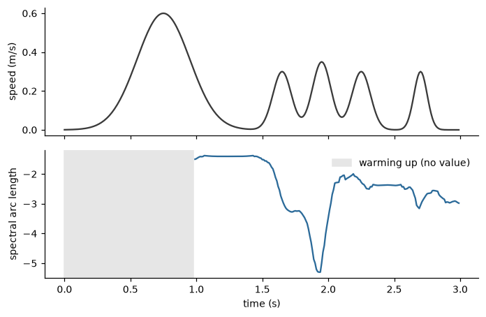

Quickstart#
This walkthrough computes one movement feature on a synthetic signal, first one sample at a time (streaming) and then on the whole recording (offline). It needs no data files and takes about ten minutes. Install PyEyesWeb first (see Installation). Every code block on this page is executed when the documentation is tested, and the output shown is the output that was produced.
A movement signal#
A smoothness measure needs the speed of a movement. The speed of a hand is built at 100 Hz for three seconds: a single smooth, bell-shaped reach, followed by a movement made of four short corrections (a jerky movement). Speeds are in metres per second and the time axis is in seconds.
>>> rate = 100.0 # samples per second
>>> time = np.arange(300) / rate # seconds
>>> def bump(centre, width, height):
... return height * np.exp(-0.5 * ((time - centre) / width) ** 2)
>>> smooth = bump(0.75, 0.20, 0.6)
>>> jerky = bump(1.65, 0.07, 0.3) + bump(1.95, 0.07, 0.35) + bump(2.25, 0.07, 0.3) + bump(2.70, 0.05, 0.3)
>>> speed = smooth + jerky
>>> speed.shape
(300,)
Create a feature#
A feature is a Python object configured at construction. SpectralArcLength measures the
smoothness of a speed profile (the closer to zero, the smoother). It works on a window of the most recent samples, so it
takes the window length in samples and the sampling rate in hertz.
>>> from pyeyesweb.low_level import SpectralArcLength
>>> feature = SpectralArcLength(window=100, sampling_rate=rate)
Before any data arrives, the feature says what it takes and what it returns. inputs lists what one call receives and
outputs is the declared set of results, with units; parameters reads back the configuration.
>>> feature.inputs
Inputs(speed: sample (1) [units/s] - speed of the movement)
>>> feature.outputs
Schema(Output('spectral_arc_length'))
>>> dict(feature.parameters)
{'window': 100, 'hop': 1, 'sampling_rate': 100.0, 'amplitude_threshold': 0.05, 'minimum_cutoff_frequency': 2.0, 'maximum_cutoff_frequency': 20.0}
Process one sample#
process takes one sample and returns a Result. State is kept between calls, as it
would be in a live loop. Time is optional, in seconds, and given with the keyword timestamp.
>>> result = feature.process(speed[0], timestamp=time[0])
>>> result
SpectralArcLengthResult(status=WARMING_UP, reason='1 of 100 samples', spectral_arc_length=nan)
>>> result.status.name, result.reason
('WARMING_UP', '1 of 100 samples')
>>> result.spectral_arc_length
nan
>>> result.valid
{'spectral_arc_length': False}
The window of this feature holds 100 samples, so the first call cannot produce a value yet: its
Status is WARMING_UP, the reason counts the samples collected so far, and the output
is NaN (a missing value is never None). The valid mapping says, for each output, whether it holds a value.
Feed the rest of the signal in a loop and count the statuses:
>>> from collections import Counter
>>> results = [feature.process(value, timestamp=stamp) for value, stamp in zip(speed[1:], time[1:])]
>>> Counter(str(result.status) for result in results)
Counter({'OK': 201, 'WARMING_UP': 98})
>>> results[97].status.name, results[97].reason
('WARMING_UP', '99 of 100 samples')
>>> results[98].status.name, float(round(results[98].spectral_arc_length, 2))
('OK', -1.5)
The first complete window is reached at the hundredth call (sample index 99): from then on every call is OK. latest keeps the last result that was OK; it is None before the first one.
>>> feature.latest
SpectralArcLengthResult(status=OK, spectral_arc_length=-2.97786)
>>> float(results[-1].timestamp)
2.99
Run a whole recording#
When the data are already recorded, run applies the same computation to the whole array and returns a
Recorder, a table with one row per sample. run starts from a fresh state by default,
and gives the same numbers as the loop above.
>>> recording = feature.run(speed, timestamps=time)
>>> recording
Recorder(SpectralArcLength, rows=300, columns=['spectral_arc_length'], status={'OK': 201, 'WARMING_UP': 99})
>>> recording.spectral_arc_length[[98, 99, 100]].round(2).tolist()
[nan, -1.5, -1.48]
>>> bool(np.isclose(recording.spectral_arc_length[-1], results[-1].spectral_arc_length))
True
A Recorder indexes like a list of results and like a table of columns. recording[99] is the Result of sample 99,
recording["spectral_arc_length"] (or the attribute of the same name) is the column as a NumPy array. to_frame()
returns a pandas DataFrame with the status names, the reason of each row and the timestamps, and to_numpy() the numeric
columns.
>>> recording[99]
SpectralArcLengthResult(status=OK, spectral_arc_length=-1.50196)
>>> recording.to_frame().drop(columns="reason").iloc[[0, 98, 99, 250]].round(3)
status timestamp spectral_arc_length
0 WARMING_UP 0.00 NaN
98 WARMING_UP 0.98 NaN
99 OK 0.99 -1.502
250 OK 2.50 -2.383
>>> recording.to_numpy().shape
(300, 1)
Plot the result#
The recorder keeps the status of every row, so the warm-up samples are easy to tell apart from the values. The figure shows the speed, and the smoothness of the last 100 samples at each instant: it stays near -1.5 during the smooth reach and falls (the movement is less smooth) once the corrections enter the window.
import matplotlib.pyplot as plt
import numpy as np
from pyeyesweb.low_level import SpectralArcLength
rate = 100.0
time = np.arange(300) / rate
bump = lambda centre, width, height: height * np.exp(-0.5 * ((time - centre) / width) ** 2)
speed = bump(0.75, 0.20, 0.6) + bump(1.65, 0.07, 0.3) + bump(1.95, 0.07, 0.35) + bump(2.25, 0.07, 0.3) + bump(2.70, 0.05, 0.3)
recording = SpectralArcLength(window=100, sampling_rate=rate).run(speed, timestamps=time)
warming_up = recording.status != 0 # integer status codes: 0 is OK
fig, (top, bottom) = plt.subplots(2, 1, sharex=True, figsize=(6.4, 4.2))
top.plot(time, speed, color="#3a3a3a")
top.set_ylabel("speed (m/s)")
bottom.plot(recording.timestamps[~warming_up], recording.spectral_arc_length[~warming_up], color="#2b6a99")
bottom.axvspan(0, time[warming_up].max(), color="0.9", label="warming up (no value)")
bottom.set_ylabel("spectral arc length")
bottom.set_xlabel("time (s)")
bottom.legend(loc="upper right", frameon=False)
fig.tight_layout()

When the input is not data#
A call with values that are not data (NaN or infinity, an empty frame, a time that goes backwards) does not raise: it
returns a result with status INVALID_INPUT, every output empty, and the explanation in reason. Nothing is buffered, so
the next valid call continues as if the rejected one had not happened. A call of the wrong shape or kind is a programming
error and raises ValueError.
>>> bad = feature.process(float("nan"))
>>> bad.status.name, bad.reason, bad.spectral_arc_length
('INVALID_INPUT', 'NaN or infinite values', nan)
>>> feature.process([1.0, 2.0])
Traceback (most recent call last):
...
ValueError: SpectralArcLength: input 'speed' expects sample of shape (1,), got shape (2,)
Where next#
The layers and the catalog, the input forms, the result objects, and the rules for time, units and parameters.
Hands-on tutorials by layer, ending with a capstone that combines features of several layers.
Every feature with its parameters, inputs, outputs and references.